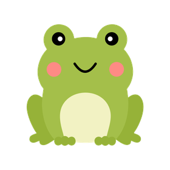
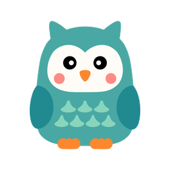
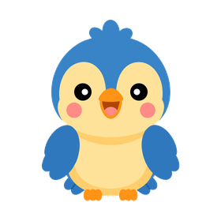
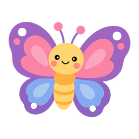
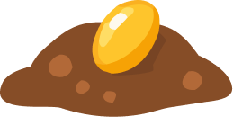

{{ t.pickPlace }}
{{ t.back }}
{{ p.index }}
{{ p.name }}
{{ p.teach }}
{{ p.dur }}
{{ t.breathe }}
{{ t.hint }}
{{ t.conn }}
🎵
{{ t.srcSerial }}
{{ t.srcSerialBlurb }}
{{ t.connectNow }}
⌨️
{{ t.srcKey }}
{{ t.srcKeyBlurb }}
{{ statusText }}
{{ t.noteHeard }}
—
{{ t.reading }}
0.000
{{ t.onBar }}
0.00
{{ t.tryBlow }}
{{ t.reZero }}
{{ t.yourBreath }}
{{ t.lenLbl }}
{{ calLen }}
{{ t.strengthLbl }}
{{ calStrength }}
{{ t.restLbl }}
{{ calRest }}
{{ t.notMeasured }}
{{ breathNote }}
{{ t.back }}
{{ warmTitle }}
{{ warmSub }}
{{ t.lenLbl }}
{{ warmLen }}
{{ t.strengthLbl }}
{{ warmStrength }}
{{ t.breathsLbl }}
{{ warmBreaths }}
{{ t.warmClip }}
{{ t.letsPlay }}
{{ t.againBreath }}
{{ t.useLast }}
{{ t.rHome }}
{{ res.name }}
{{ res.title }}
{{ res.sub }}
{{ res.scoreLabel }}
{{ res.score }}
{{ t.rBreaths }}
{{ res.breaths }}
{{ t.rLongest }}
{{ res.longest }}
{{ t.rRetry }}
{{ t.rNext }}
{{ t.rPlaces }}
{{ t.timeBar }}
0:00
{{ t.back }}

{{ t.breathBar }}
{{ t.sparks }}
0
{{ t.back }}
{{ t.timeBar }}
0:00
{{ t.breathBar }}

{{ t.steadyBar }}
{{ t.sparks }}
0
{{ t.timeBar }}
0:00
{{ t.back }}
{{ t.yourGo }}

{{ t.sparks }}
0
{{ t.back }}
{{ t.timeBar }}
0:00


0/5
{{ t.pondHint }}